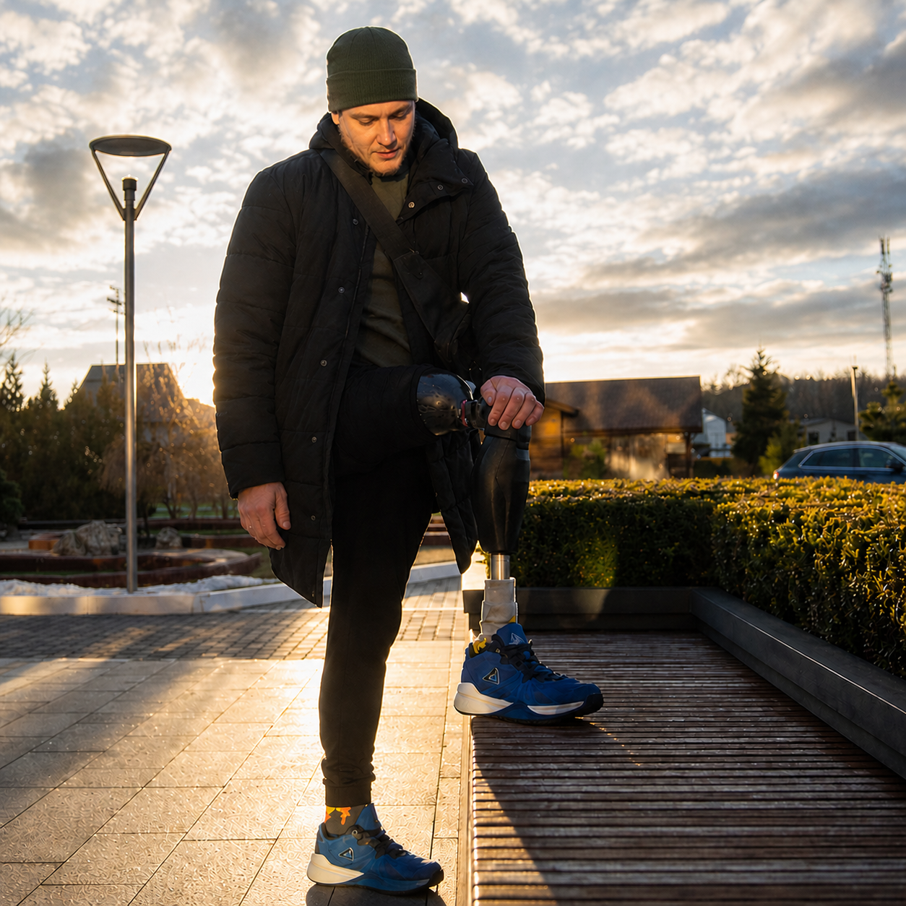
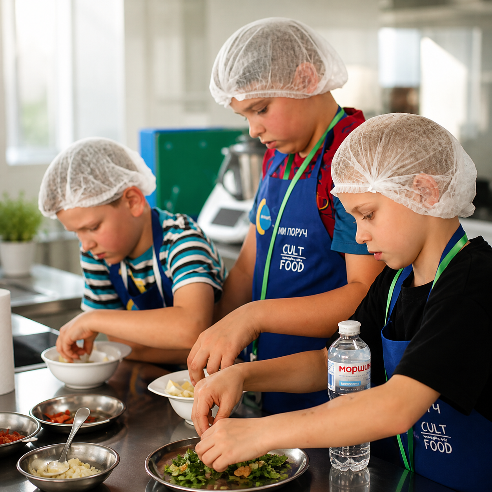
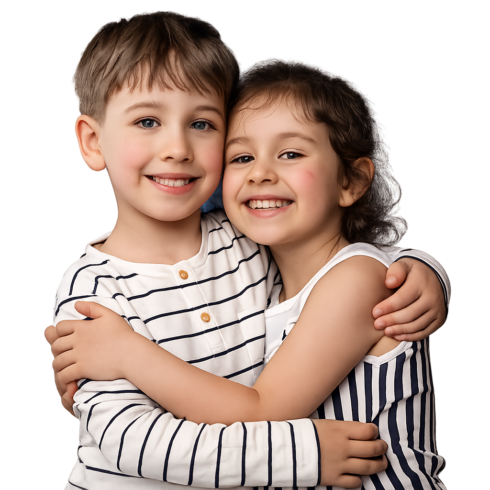

ФОНД
ПІДТРИМКИ
ПОСТРАЖДАЛИХ
ВІД ВІЙНИ
Ми хочемо допомогти кожному, хто постраждав під час війни
ПІДТРИМАТИ ФОНДМИ – ФОНД ПІДТРИМКИ
ПОСТРАЖДАЛИХ ВІД ВІЙНИ
Наша мета – психологічна та гуманітарна допомога українцям
Кожен, хто звернеться, отримає допомогу, яка у наших силах
РЕАБІЛІТАЦІЙНИЙ ЦЕНТР
Ми допомагаємо людям, які постраждали знайти правильне лікування. У нашому фонді є чотири напрями: фізичної та реабілітаційної медицини, терапевтичне, неврологічне та хірургічне. Ми маємо заклади-партнери, де швидко та якісно можуть надати допомогу.

РОБОТА З ДІТЬМИ
Діти – найвразливіша частина суспільства, і їм особливо потрібна підтримка дорослих. Тому наш фонд збирає речі для дітей, проводить літні й зимові табори, майстер-класи та за потреби – дитячих психотерапевтів.

Наша місія – щоб кожен українець мав можливість отримати допомогу й не залишився наодинці зі своїми проблемами


ПІДТРИМАЙТЕ НАШУ РОБОТУ!
Усі ваші донати йдуть саме на роботу фонду, заробітні плати ми виплачуємо з коштів грантодавців
Наша мета 10 000 000 гривень!
КОНТАКТИ
Якщо у вас виникають питання –
телефонуйте за номером
0-987-654-321
Або пишіть нам у чат-бот